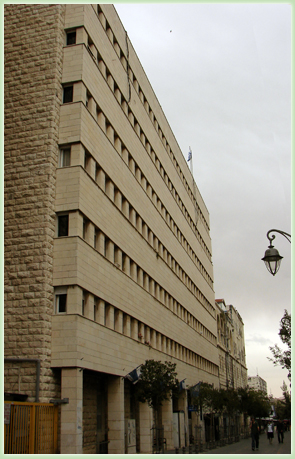

Битуах Леуми — социальное страхование в Израиле
Всё что Вы хотели узнать о Битуах Леуми, но стеснялись спросить
Большинство израильтян, включая нас с Вами, сталкиваются со словосочетанием «Битуах Леуми» в основном в контексте выплат, отчисляемых со своей зарплаты. Проще говоря, это те неприятные цифирки, которые увеличивают разницу между «нетто» и «брутто».
Эта статья призвана пролить свет на то, куда идут вышеупомянутые выплаты, кто обязан, а кто не обязан платить, в каких случаях мы имеем право получить деньги от Битуах Леуми, и когда следует обратиться за помощью адвоката.
Для чего нужен Битуах Леуми?
Институт Национального Страхования — «Битуах Леуми» — это государственная организация, созданная с целью оказывать экономическую поддержку гражданам, неспособным самостоятельно обеспечить свое существование: старикам, инвалидам, матерям-одиночкам и безработным, временно лишенным источника дохода. Помимо страхования, Битуах Леуми предоставляет гражданам дополнительные услуги: курсы повышения квалификации, реабилитационные программы, помощь социальных работников и уход за пожилыми или больными людьми.
Как любая страховка, Битуах Леуми предполагает взымание ежемесячных взносов с граждан, дабы в момент нужды, если таковой наступит, выплатить полагающиеся им по закону пособия и компенсации. В отличии от обычной страховой фирмы, где размер ежемесячного взноса (премии) зависит от размера компенсации и условий сделки, в Битуах Леуми взнос высчитывается в зависимости от экономических возможностей человека.
С 1-го января 1995 года вступил в силу закон об обязательной медицинской страховке. С тех пор Битуах Леуми отвечает за взымание с граждан платы за медицинскую страховку, предоставляемую больничными кассами (купот холим), и перевод этих денег в больничные кассы.
Кто обязан платить взносы в Битуах Леуми?
Все граждане государства Израиль, достигшие 18-и лет.
Кто не обязан?
-
Солдаты срочной службы — за них платит министерство обороны.
-
Учащиеся техникумов или курсов профессиональной подготовки, достигшие 18-и лет, но отложившие призыв в армию до окончания учёбы. Они освобождены от уплаты взносов в Битуах Леуми на время своей учёбы, при условии что поступят на срочную службу в армии обороны Израиля раньше, чем достигнут 21-го года.
-
Студенты ВУЗов до призыва в армию (атудаим), освобождены от взносов в Битуах Леуми до окончания учёбы.
-
Новые репатрианты, находящиеся в Израиле меньше года и не нашедшие работу, освобождены от взносов в Битуах Леуми до окончания первого года их пребывания в стране.
-
Репатрианты, приехавшие в Израиль в возрасте старше 60-и лет.
Все остальные граждане страны, включая безработных и домохозяек, обязаны платить взносы в Битуах Леуми. Наёмные работники при поступлении на работу заполняют соответствующий бланк, и взнос отчисляется из их зарплат автоматически. Владельцы частных бизнесов и безработные должны записаться в отделении Битуах Леуми по месту жительства, и самостоятельно переводить положенные суммы. У безработных, которые получают пособие по безработице, взнос автоматически вычитается из размера пособия.
Битуах Леуми и граждане Израиля, находящиеся за границей
По закону, граждане Израиля обязаны выплачивать взносы в Битуах Леуми, даже находясь за границей. Лица, собирающиеся провести за пределами Израиля больше 6-и месяцев, должны сообщить об этом в Битуах Леуми, и предоставить способ оплаты на этот срок. Граждане, находящиеся границей более 2-х лет, и не оплачивающие Битуах Леуми в течении этого срока, теряют своё право на медицинское обслуживание в купат холим. Чтобы вернуть себе право на медицинскую страховку в Израиле, эти люди должны будут ждать 2 месяца за каждый год неуплаты.
Пособия и компенсации от Битуах Леуми
Пособия, выплачиваемые Битуах Леуми, можно поделить на два типа: страховые и нестраховые. Страховое пособие выплачивается гражданам, которые ежемесячно платили взносы в Битуах Леуми, и по какой либо причине стали нуждатся в экономической поддержке. Нестраховое пособие выплачивается гражданам, которые не вносили ежемесячные взносы в Битуах Леуми, но государство считает нужным оказывать им экономическую поддержку. Такими гражданами являются, например, репатрианты, приехавшие в Израиль в пожилом возрасте, или вдовы и сироты, лишившиеся кормильца. Нестраховые пособия выплачиваются гражданам министерством финансов, а Битуах Леуми выступает в роли посредника, передающего средства нуждающимся.
Также, можно поделить пособия от Битуах Леуми на четыре основные группы:
-
Пособия на длительный срок
Эти пособия выплачиваются гражданам, потерявшим способность самостоятельно зарабатывать на жизнь. В эту группу входят пособия по старости, пособия по инвалидности, пособия вдовам и сиротам, потерявшим кормильца.
-
Пособия и компенсации, заменяющие зарплату
Эти пособия выплачиваются людям, которые временно лишились заработка: женщинам в декретном отпуске, безработным, пострадавшим от производственных травм.
-
Обеспечение прожиточного минимума
Пособия по обеспечению прожиточного минимума выплачиваются людям, чьи доходы не достигают размера прожиточного минимума, определённого законом.
-
Пособия на детей
Универсальное пособие, выплачиваемое всем, у кого на попечении находятся дети до 18-и лет.